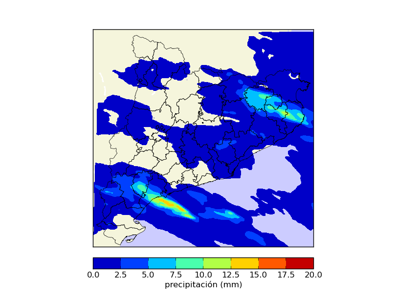
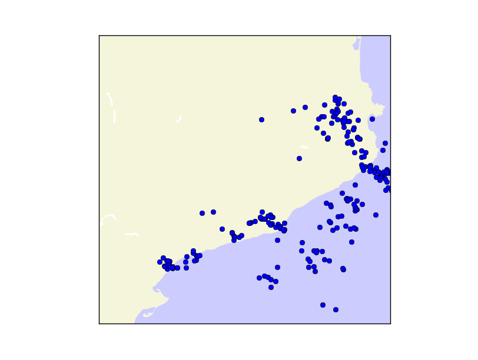
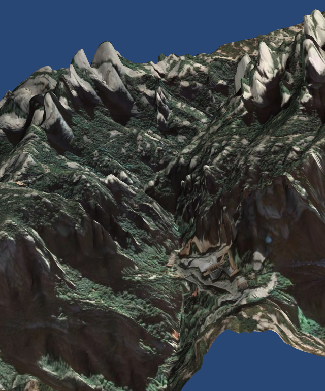

a = 3
b = 4
a + b
if b > a:
print "b es mayor que a"
for i in range(10):
print "Iteración número " + str(i)
Abrir consola ipython
import numpy
a = numpy.ones((20,10))
a * 23
a + 1
a.sum()
a[3:6,4:8]
a[3:6,4:8] = 2
a[[2,3],[4,4]]
Probar
El archivo con los ejemplos es gdal_ejemplos.py
El archivo con los ejemplos es fiona_ejemplos.py
El archivo con los ejemplos es osr_ejemplos.py
'PROJCS["ETRS89 / UTM zone 31N", Nombre de la proyección (arbitratrio)
GEOGCS["ETRS89", Código del Datum
DATUM["European_Terrestrial_Reference_System_1989", Nombre del Datum
SPHEROID["GRS 1980",6378137,298.2572221010002, AUTHORITY["EPSG","7019"]], Definición del elipsoide
TOWGS84[0,0,0,0,0,0,0],AUTHORITY["EPSG","6258"]], Transformación aproximada del datum a WGS84. 0 indica que el programa asume que son similares
PRIMEM["Greenwich",0],Meridiano de referencia
UNIT["degree",0.0174532925199433],AUTHORITY["EPSG","4258"]],Transofmación a radianes
PROJECTION["Transverse_Mercator"],Etiqueta que define la proyección que usará proj4
PARAMETER["latitude_of_origin",0],
PARAMETER["central_meridian",3],
PARAMETER["scale_factor",0.9996],
PARAMETER["false_easting",500000],
PARAMETER["false_northing",0], Parámetros de la proyección UTM
UNIT["metre",1,AUTHORITY["EPSG","9001"]],AUTHORITY["EPSG","25831"]]' Unidades usadas
(258047, 1000, 0.0, 4753640, 0.0, -1000)Xgeo = gt(0) + Xpixel*gt(1) + Yline*gt(2)
Ygeo = gt(3) + Xpixel*gt(4) + Yline*gt(5)
geotransform = ds.GetGeoTransform()
gdal.ApplyGeoTransform(geotransform, x, y)
gdal.InvGeoTransform(geotransform)El archivo con los ejemplos es mayavi_ejemplos.py
/
#